Nexa
Overview
Das Ziel war es, weg von klassischen Fernbedienungen zu kommen und eine neue, intuitive Art der Steuerung zu entwickeln, die für Links- und Rechtshänder gleichermaßen funktioniert. Das Projekt vereint modernes Design mit einer haptischen Bedienung, die durch 3D-Druck und Usability-Tests bis zum fertigen Prototypen entwickelt wurde.

Konzept
Einer der Herausforderungenbestand darin, alle Funktionen des Roboters in einem kompakten, einhändig bedienbaren Controller unterzubringen.
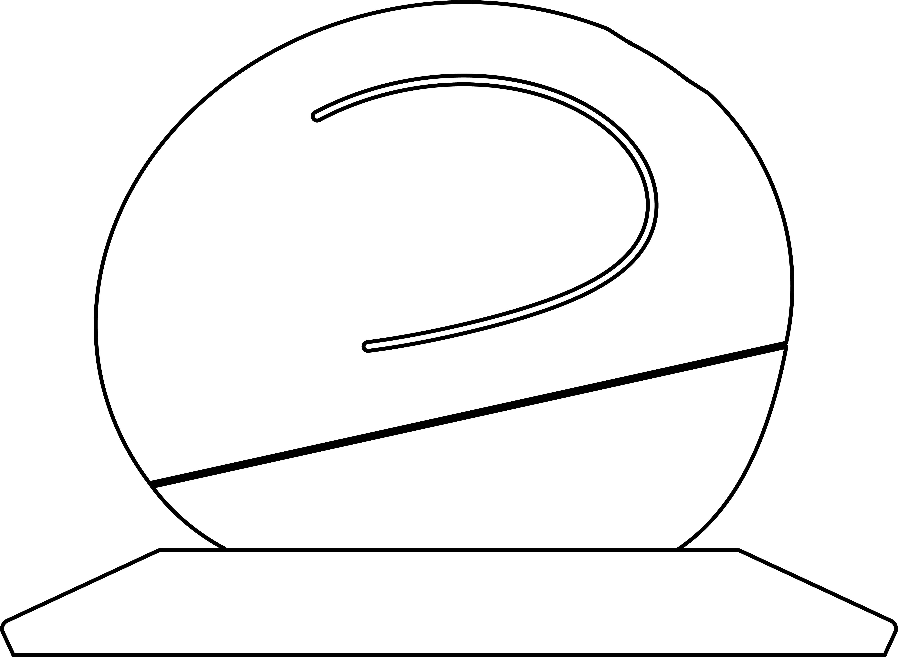
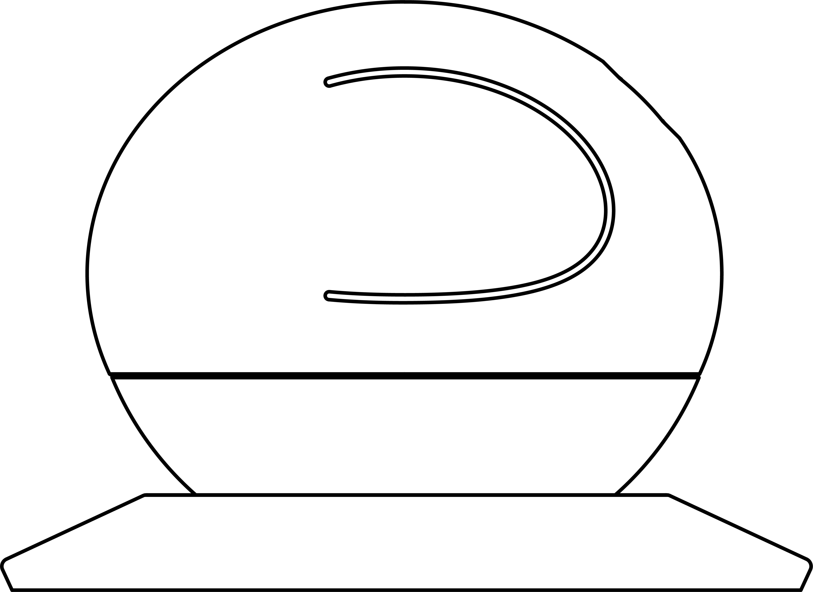
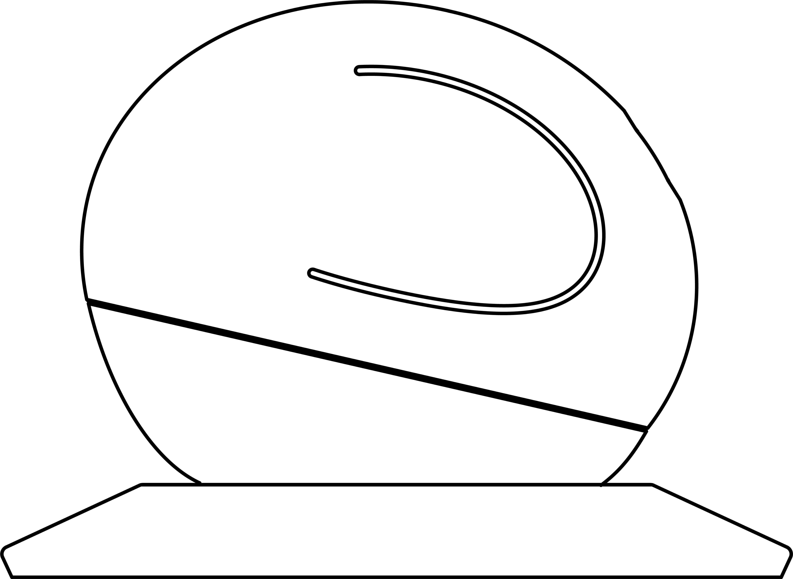
Neigen: Fahren
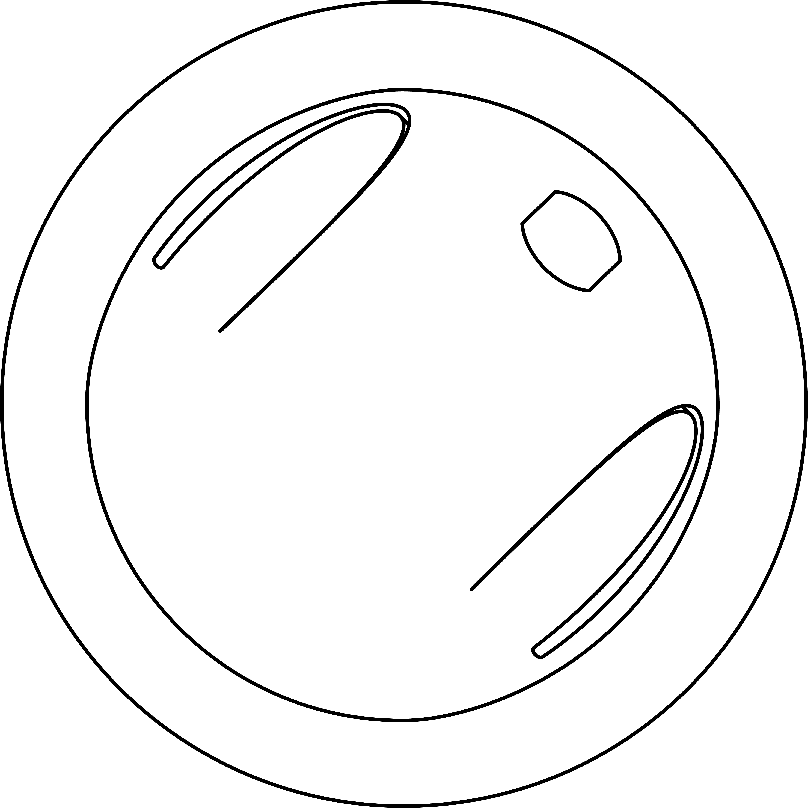
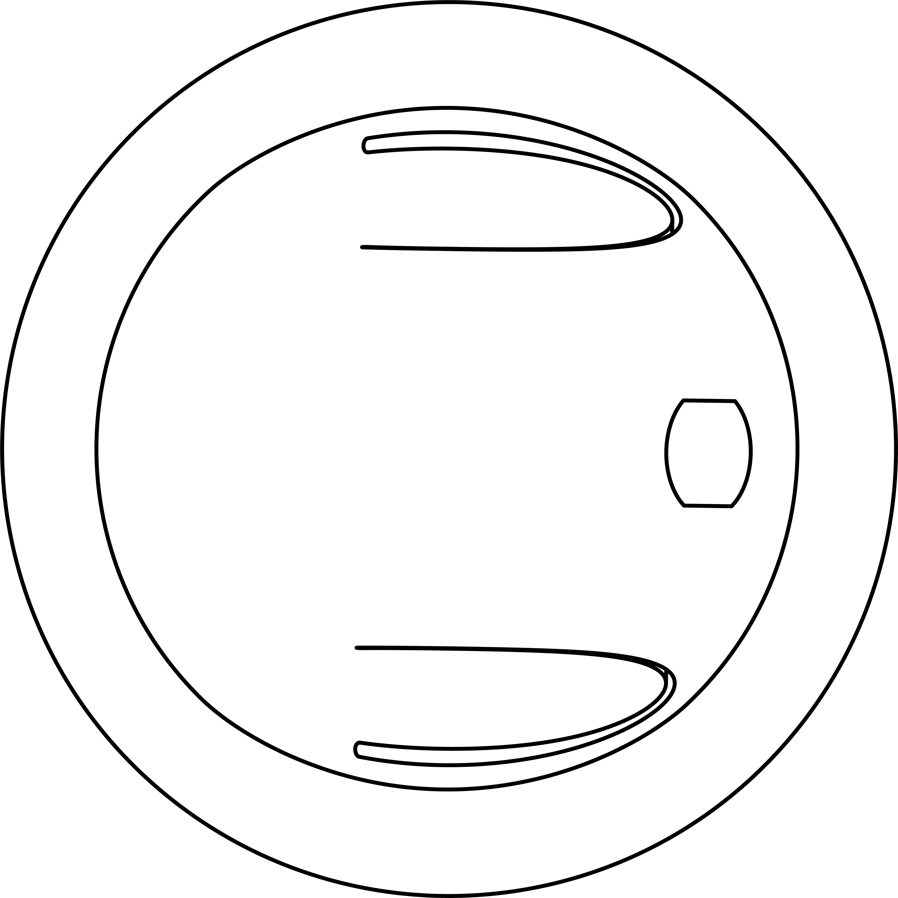
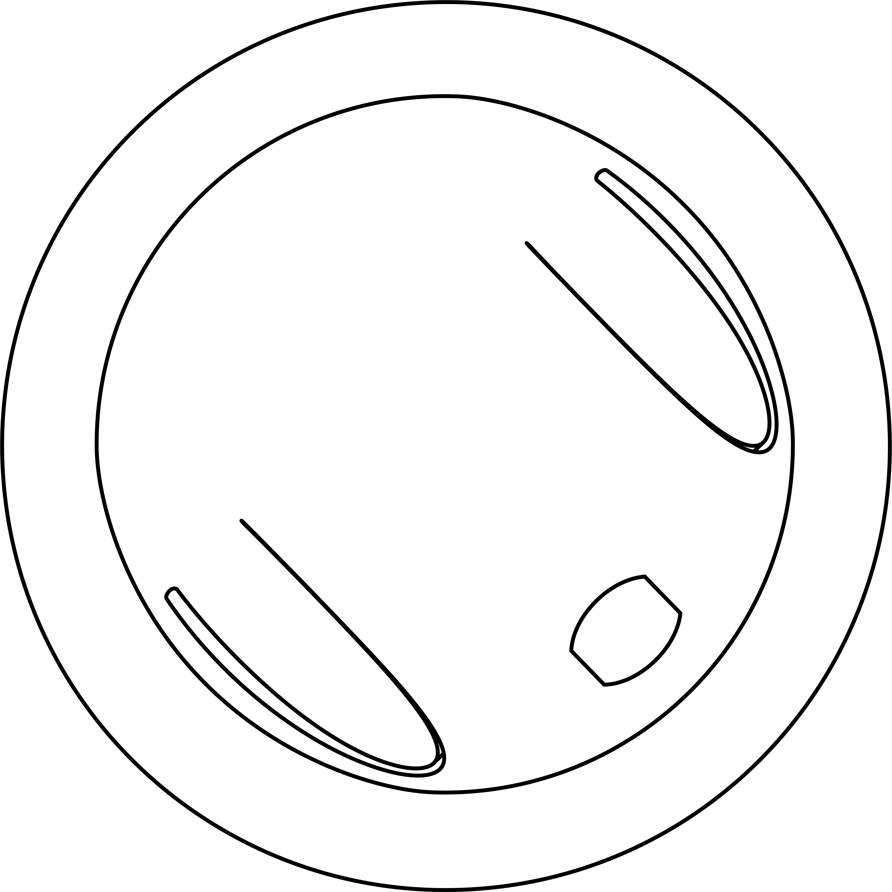
Drehen: Lenken
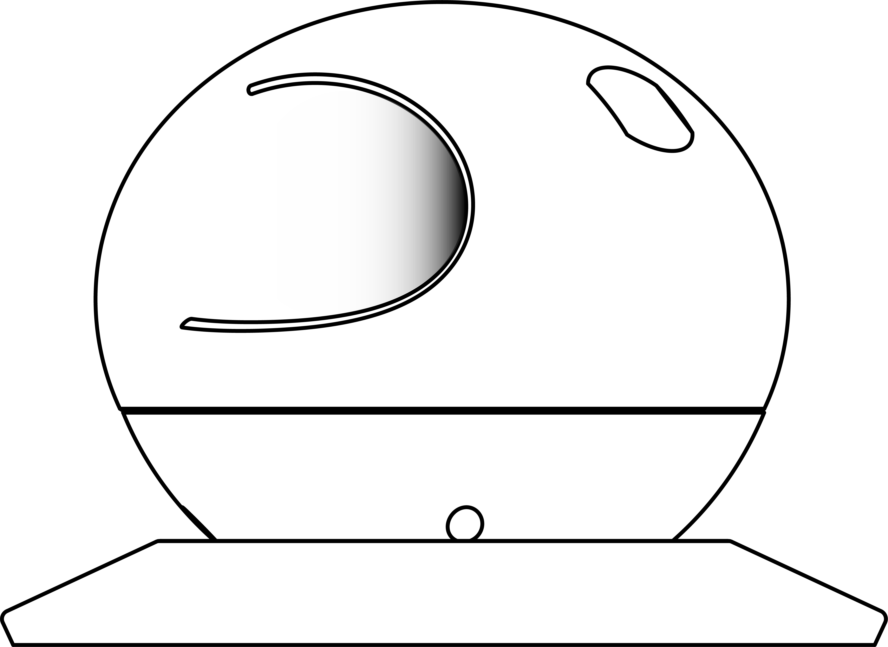
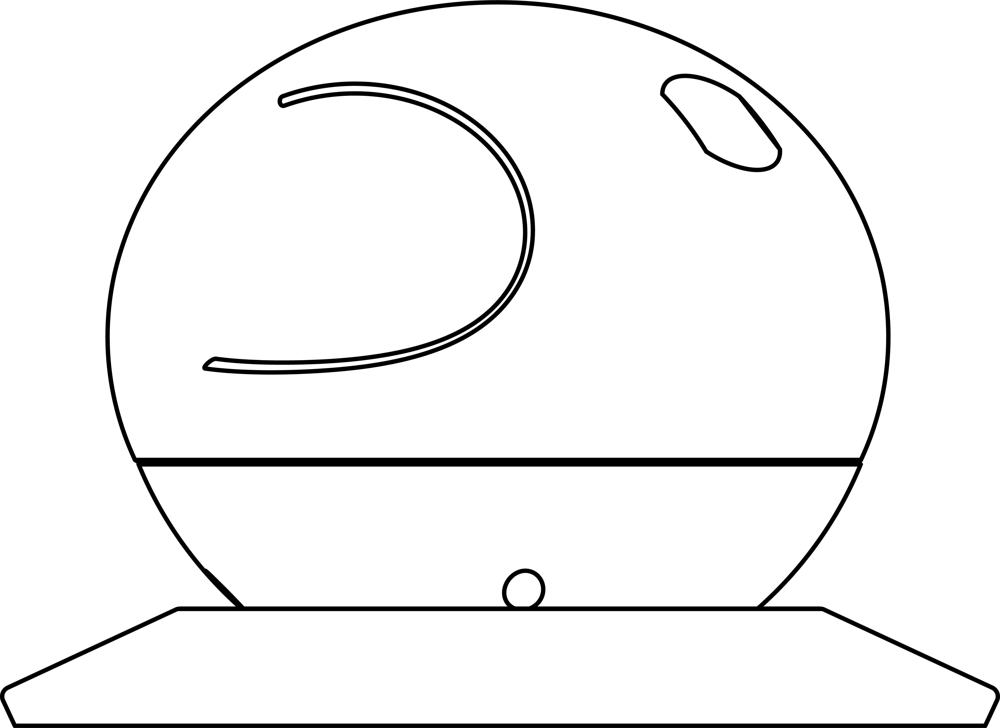
Drücken: Greifen
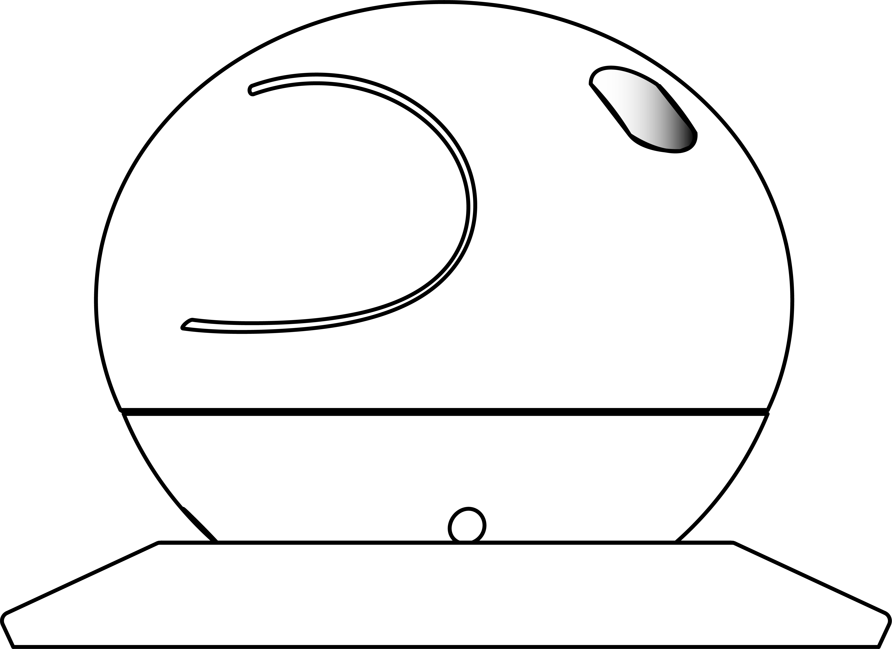

Sliden: Hoch/Runter
Usability Testing
Sechs Testpersonen erhielten die Aufgabe, den Controller ohne vorherige Anleitung auszuprobieren und verschiedene Funktionen des Roboters zu steuern. Ziel war es, die Benutzerfreundlichkeit, das Verständnis der Interaktionen sowie die Ergonomie des Controllers zu überprüfen.
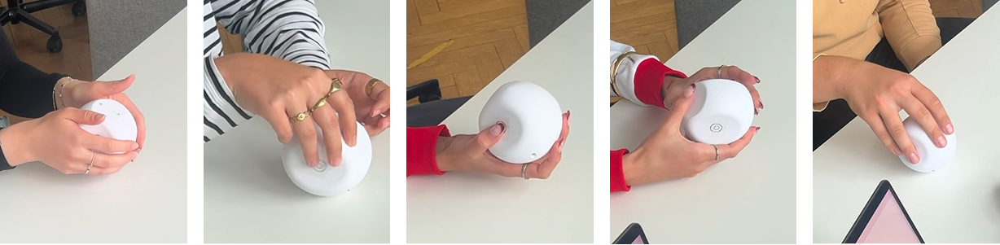
Funktionsprototyp
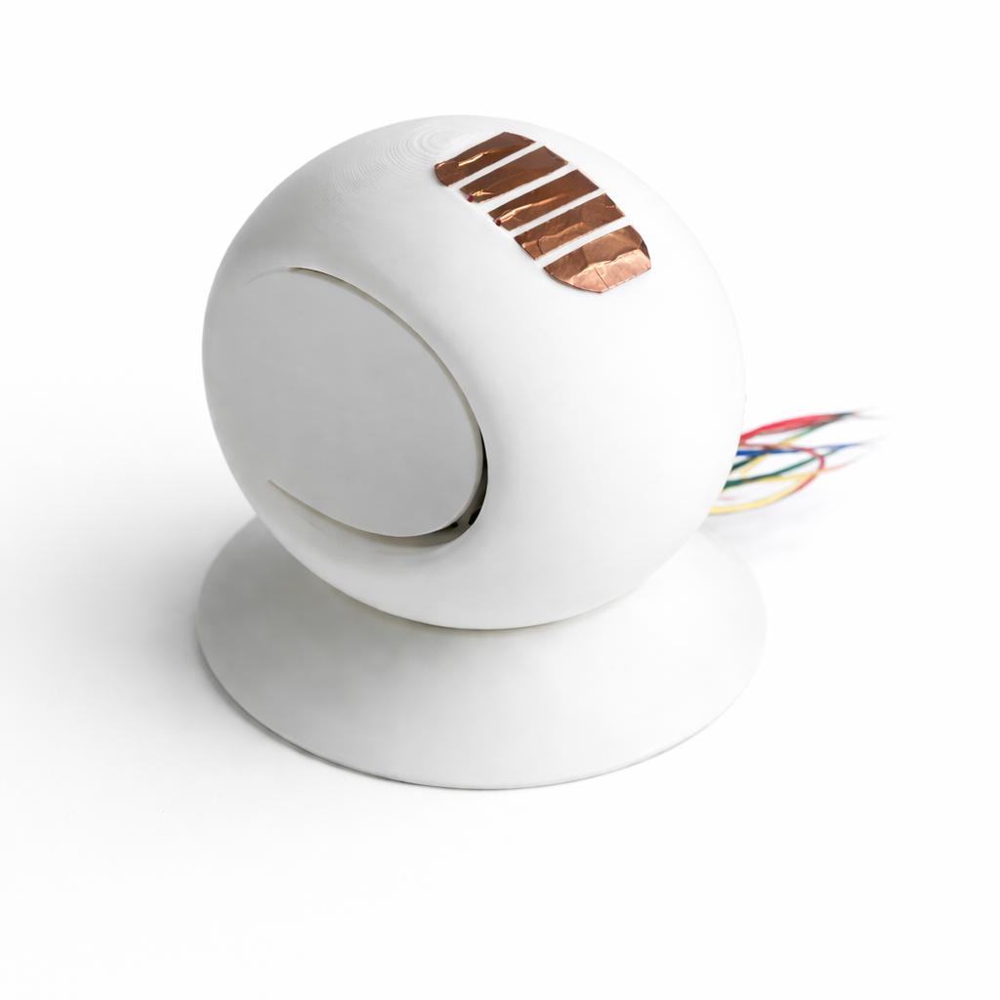
Das im 3D-Druck gefertigte Kugelgehäuse beherbergt den MPU6050-Chip zur Echtzeit-Bewegungserfassung. Die auf der Oberseite angebrachten Kupfertapes nehmen die Slider-Bewegung auf und übertragen die Signale über die farbigen Kabel direkt an den Roboter.
Renderings
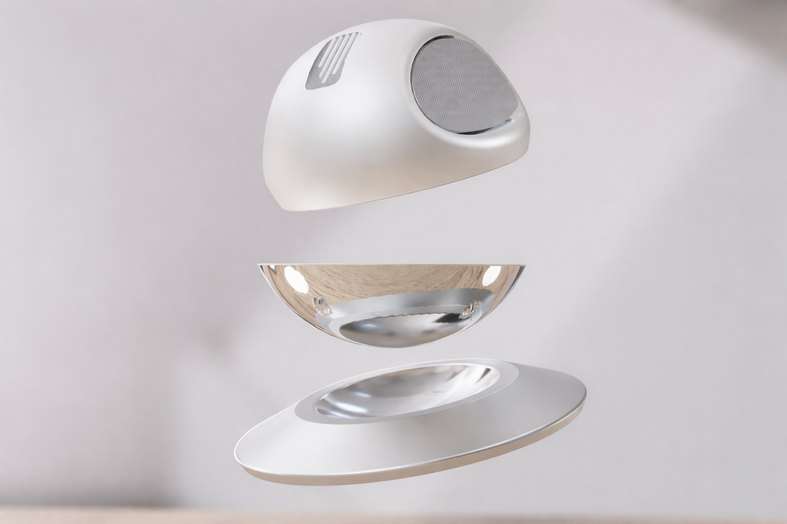
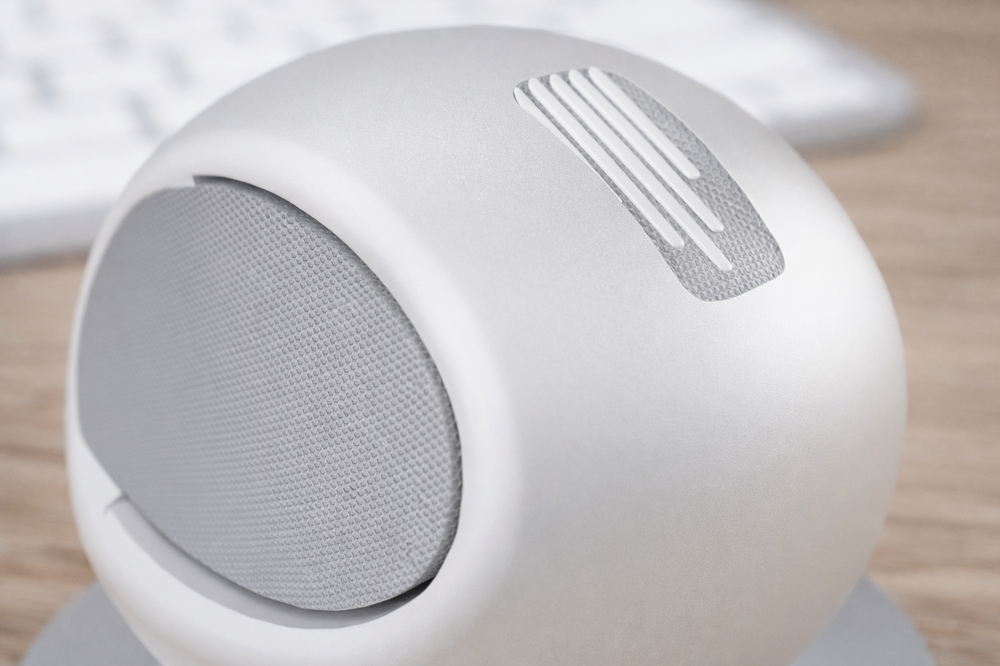
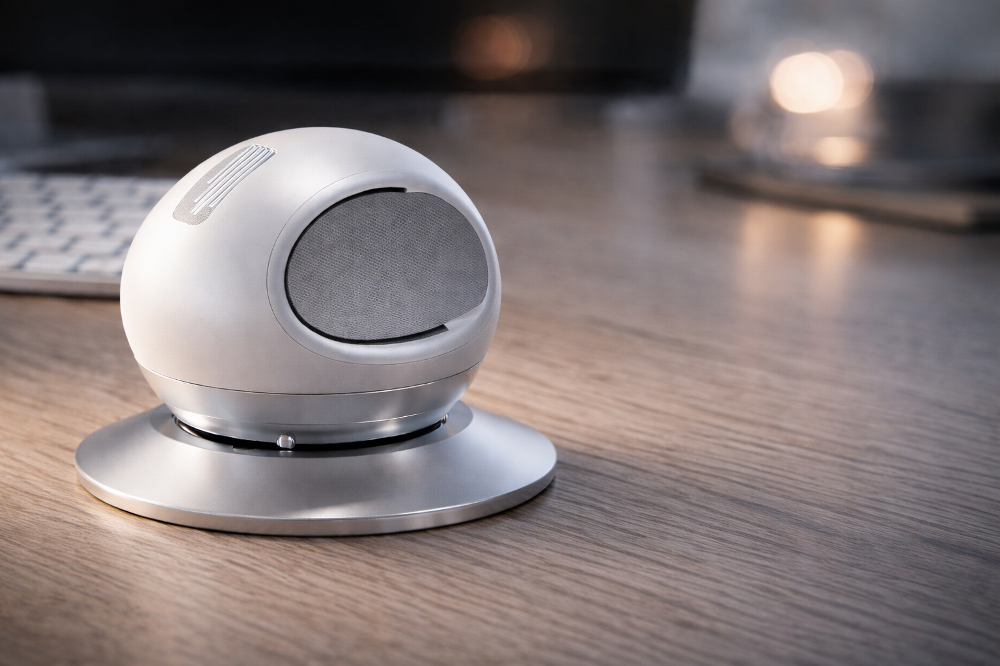